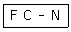

침투비파괴검사기사 (2015-09-19 기출문제)
1과목: 비파괴검사 개론
1. 다음 중 침투탐상시험과 비교하여 자분탐상시험의 장점으로 올바른 것은?
- 절연체인 재료도 탐상할 수 있다.
- 비철금속 재료도 탐상할 수 있다.
- 페인트 처리된 강 재료도 탐상할 수 있다.
- 표면이 복잡한 형상의 시험에도 쉽게 탐상할 수 있다.
(정답률: 70%)

2. 다음 중 물질의 손상량 평가법으로 비파괴검사 방법인 것은?
- 레프리카법
- 충격시험법
- 크리프시험법
- 피로시험법
(정답률: 67%)
3. 다음중 얇은 시험체의 두께 측정이 가능한 비파괴검사법은?
- 침투탐상검사
- 누설검사
- 음량방출시험
- 와전류탐상검사
(정답률: 85%)
4. 핵연료봉과 같은 높은 방사성 물질의 검사에 적합한 비파괴검사 방법은?
- 입자가속기를 이용한 고에너지 엑스선투과검사
- Co-60을 이용한 감마선투과검사
- 직접법을 이용한 중성자투과검사
- 전사법을 이용한 중성자투과검사
(정답률: 72%)
5. 침투탐상시험에서 침투능력과 관계되는 물리적 성질과 거리가 먼 것은?
- 표면 장력
- 모세관 현상
- 내부식성
- 점성
(정답률: 87%)
6. 분말야금법의 특징을 설명한 것 중 틀린 것은?
- 가공 정밀도가 높다.
- 절삭가공 생략이 가능하다.
- 제품의 크기에 제한이 없다.
- 공공(空孔)이 분산된 재료의 제조가 가능하다.
(정답률: 60%)
7. 재료에 어떤 일정한 하중을 가하고 어떤 온도에서 긴 시간을 경과함에 따라 그 스트레인을 측정하여 각종 재료의 역학적 양을 결정하는 시험은?
- 피로시험
- 절단시험
- 인장시험
- 크리프시험
(정답률: 65%)
8. 구리(Cu)의 특성을 설명한 것 중 틀린 것은?
- 전기, 열의 양도체이다.
- 전연성이 좋으므로 가공이 용이하다.
- 체심입방격자이며, 비중이 약 10.8이다.
- Zn, Sn, Ni, Au, Ag 등과 용이하게 합금을 만든다.
(정답률: 86%)
9. Al-Cu계 합금의 석출 과정을 올바르게 나타낸 것은?
- G. P(Ⅰ)→G.P(Ⅱ)→과포화 고용체→θ'→θ
- G.P(Ⅱ)→G.P(Ⅰ)→과포화 고용체→θ→θ‘
- 과포화 고용체→G.P(Ⅰ)→G.P(Ⅱ)→θ'→θ
- 과포화 고용체→G.P(Ⅱ)→G.P(Ⅰ)→θ→θ‘
(정답률: 68%)
10. 구상흑연주철에 관한 살명으로 옳은 것은?
- 접종제로는 주로 Zn이 사용된다.
- 불스아이(bull' s eye)조직을 갖는다.
- 조직은 시멘타이트와 베이나이트이다.
- 내마모용으로 비강도가 매우 높다.
(정답률: 49%)
11. 열전대로 사용되는 알루멜 합금의 주요 조성으로 옳은 것은?
- Ni-Al-Fe
- Al-Cr-Co
- Ni-Mg-Cu
- Al-Mn-Pb
(정답률: 53%)
12. 금속의 가공성이 우수하며, 귀속 원자 수가 4개인 격자는?
- 체심입방격자
- 면심입방격자
- 조밀육방격자
- 단순입방격자
(정답률: 72%)
13. 표면경화용 침탄용강이 구비하여야 할 조건으로 가장 적합한 것은?
- 저탄소강이어야 한다.
- 중탄소강이어야 한다.
- 고탄소강이어야 한다.
- 탄소 함유량에 관계없다.
(정답률: 54%)
14. 스테인리스강의 조직에 해당되지 않는 것은?
- 페라이트
- 마텐자이트
- 시멘타이트
- 오스테나이트
(정답률: 60%)
15. 강중의 잔류 오스테나이트를 마텐자이트로 변태시킬 목적이 열처리는?
- 탬퍼링 처리
- 마퀜칭 처리
- 서브제로 처리
- 오스포밍 처리
(정답률: 33%)
16. 용접부에 발생하는 비틀림 변형을 줄이기 위한 시공 상의 주의사항으로 틀린 것은?
- 용접시 적당한 지그를 활용할 것
- 용접부에 집중 용접을 피할 것
- 이음부의 맞춤을 정확하게 할 것
- 용접순서는 구속이 작은 부분부터 용접할 것
(정답률: 87%)
17. 피복 아크 용접시 피복제의 역할에 대한 설명으로 틀린 것은?
- 용착금속의 기계적 성질을 좋게한다
- 스패터의 발생을 많게 한다.
- 용착금속의 급냉을 방지한다.
- 아크의 안정을 좋게 한다.
(정답률: 82%)
18. 서브머지드 아크 용접의 장점으로 틀린 것은?
- 고전류 사용이 가능하다.
- 비드의 외관이 아름답다.
- 기계적 성질이 우수하다.
- 홈가공의 정밀을 요한다.
(정답률: 50%)
19. 아크용접에서 아크를 끊는 순간에 생기며, 용융 풀(pool) 의 응고 수축에 의한 오목형상으로 편석이 생기기 쉬운 곳을 의미하는 용어는?
- 엔드탭
- 크레이터
- 비드 시점
- 스카핑
(정답률: 76%)
20. 용접기의 무부하전압 100V, 아크전압이 40V, 아크전류가 300A이고, 내부손실이 5kW이면 용접기의 효율과 역률은 약 얼마인가?
- 효율 70.6%, 역률 56.7%
- 효율 56.7%, 역률 70.6%
- 효율 53.0%, 역률 58.5%
- 효율 58.5%, 역률 53.0%
(정답률: 59%)
2과목: 침투탐상검사 원리
21. 침투탐상검사시 균열의 깊이와 가장 밀접한 관계가 있는 것은?
- 침투시간
- 현상시간
- 현상제 도막의 두께
- 형광 또는 색체의 폭이나 휘도
(정답률: 33%)
22. 다음 중 의사지시를 나타낼 수 있는 것은?
- 과도한 세척
- 부적절한 현상제의 사용
- 낮은 온도에서 검사
- 표면에 존재하는 먼지, 실
(정답률: 88%)
23. 다음 중 현상제에 대한 설명으로 옳은 것은?
- 습식 현상제 : 벤토나이트(Bentonite), 활성백토 등에 습윤제, 계면활성제 등을 알코올계 용제에 현탁한 것
- 습식 현상제 : 벤토나이트(Bentonite), 활성백토, 습윤제, 계면활성제 등을 오일 용제에 현탁한 것
- 속건식 현상제 : 산화마그네슘, 산화칼슘, 산화티탄 등을 알코올 용제에 현탁한 것
- 속건식 현상제 : 산화마그네슘, 산화칼슘, 산화티탄 등을 물에 현탁한 것
(정답률: 65%)
24. 보수검사(정기검사)의 용접부에 대한 침투탐상시험에서 주요 검출대상으로 적합한 것은?
- 응력부식균열
- 크리프균열
- 침식
- 부식
(정답률: 70%)
25. 다음 침투탐상시험 중 자외선 조사장치를 사용하지 않는 것은?
- 수세성 형광침투탐상시험
- 수세성 염색침투탐상시험
- 용제제거성 형광침투탐상시험
- 후유화성 형광침투탐상시험
(정답률: 86%)
26. 침투탐상검사에 사용되는 현상제 중 백색 미세분말을 휘발성이 높은 유기용제에 현탁한 현상제는?
- 건식현상제
- 속건식현상제
- 습식현상제
- 무현상제
(정답률: 78%)
27. 다음 결함 중 침투탐상시험으로 가장 탐상하기 좋은 것은?
- 내부 개재물
- 표면 균열
- 내부 기공
- 라미네이션
(정답률: 91%)
28. 침투탐상검사에서 습식 현상법의 특성으로 옳은 것은?
- 분말 형태이므로 인체에 흡입될 수 있기 때문에 방진 및 환기가 필요하다.
- 현상제 적용 후 건조처리가 필요하다.
- 소형 다량의 제품에 적용할 수 없다.
- 일정한 피막을 형성할 수 없어 배경이 저하되어 감도가 떨어진다.
(정답률: 67%)
29. 다음 중 후유화성 침투탐상시험시 무효가 될 수 있는 가장 중요한 인자는?
- 과잉 침투시간
- 과잉 현상시간
- 과잉 유화시간
- 과잉 전처리시간
(정답률: 70%)
30. 자외선등에 부착된 필터가 제거시켜야 하는 빛의 종류는?
- 수은등이 발산한 가시광선
- 형광침투제에 의한 형광
- 300nm 이상의 파장을 가진 광
- 400nm 이상의 파장을 가진 광
(정답률: 76%)
31. 침투탐상시험에서 일반적으로 현상제로 사용하지 않는 것은?
- 건식현상제
- 습식현상제
- 비수성 현상제
- 높은 점도 현상제
(정답률: 58%)
32. 침투탐상시험에 사용되는 침투액의 물리적 특성으로 옳은 것은?
- 침투액은 빨리 건조되어야 한다.
- 침투액은 쉽게 제거되어서는 안된다.
- 침투액은 점성이 높아야 한다.
- 침투액은 적심성이 우수해야 한다.
(정답률: 84%)
33. 침투탐상시험시 시험체의 표면이 거칠고 시험장소를 어둡게 할 수 없는 경우에 가장 적절한 시험방법은?
- 수세성 형광침투탐상시험법
- 수세성 염색침투탐상시험법
- 후유화성 형광침투탐상시험법
- 용제제거성 염색침투탐상시험법
(정답률: 66%)
34. 관찰을 위한 시험 조건으로 거리가 가장 먼 것은?
- 시험면의 밝기
- 주변의 밝기
- 눈과 관찰부위와의 각도
- 광원의 밝기
(정답률: 51%)
35. 모세관현상에 대한 설명으로 틀린 것은?
- 모세관 현상은 액체에 미세한 관을 세웠을 때, 액체가 관내를 상승하여 액체의 면보다 높거나 낮게 되는 현상을 말한다.
- 모세관 현상은 액체의 분자들이 표면적을 작게 가지려는 표면장력의 영향을 받는다.
- 모세관 현상은 액체가 고체 표면을 적시는 능력을 가진 적심성의 영향을 받는다.
- 모세관 현상은 표면장력에 의해 광내부의 액면을 위로 올리게 되므로 관내의 모든 액면은 항상 오목한 형상이다.
(정답률: 76%)
36. 침투탐상검사시 현상시간이 지나치게 길 경우 나타날 수 있는 현상은?
- 명암도가 낮아진다.
- 미세결함에 대한 감도가 떨어진다.
- 명암도가 높아진다.
- 미세결함에 대한 감도가 높아진다.
(정답률: 77%)
37. 증기 세척법으로 제거될 수 없는 표면의 오염 물질은?
- 녹
- 가용성 기름
- 그리스
- 중유
(정답률: 86%)
38. 침투액의 점성이 탐상에 미치는 영향에 대한 설명으로 옳은 것은?(오류 신고가 접수된 문제입니다. 반드시 정답과 해설을 확인하시기 바랍니다.)
- 침투액의 점성은 침투속도와 침투력에 큰 영향을 미치지 않는다.
- 침투액의 점성은 침투속도에는 영향을 미치지 않지만 침투력에는 큰 영향을 미치지 않는다.
- 침투액의 점성은 침투력에는 영향을 미치지만 침투 속도에는 큰 영향을 미치지 않는다.
- 침투액의 점성은 침투속도와 침투력 모두에 큰 영향을 미친다.
(정답률: 57%)
39. 일반적으로 침투액의 비중은 어느 정도인가? (단, 비가연성 염색침투액은 제외한다.)
- 약 1.2이하
- 약 2.5이하
- 약 3.0이하
- 약 5.0이하
(정답률: 64%)
40. 염색 침투액을 사용하는 경우에는 건식 현상제를 잘 사용하지 않는데 그 이유는 무엇인가?
- 흠의 지시와의 색채대비가 분명하지 않다.
- 침투액의 성분과 화학적인 반응을 일으킨다.
- 현상제의 형광물질이 흡출작용을 방해한다.
- 현상제에 의해 침투액이 경화된다.
(정답률: 45%)
3과목: 침투탐상검사 시험
41. 다음 중 침투제나 현상제의 잔류물을 제거해 주는 후처리 과정이 필수적으로 요구되는 경우로 볼 수 없는 것은?
- 탐상 결과를 판정하여 폐기되는 경우
- 현상제가 흡습성이 강하여 부식의 우려가 있는 경우
- 후속 공정으로 시험체를 가공할 때 지장을 줄 우려가 있는 경우
- 보수하여 사용할 때 시험체에 남아 있는 침투액이 사용에 지장을 줄 우려가 있는 경우
(정답률: 86%)
42. 후유화성 형광침투탐상시험에 대한 설명으로 가장 거리가 먼 것은?
- 미세한 결함도 검출 가능하다.
- 비교적 얕은 결함도 검출 가능하다.
- 수분이 혼입되어도 침투액의 성능저하가 적다.
- 거친 표면을 가진 시험체에도 적용할 수 있다.
(정답률: 76%)
43. 다음 중 형광 침투액에 기름베이스 유화제를 사용하는 경우 유화시간으로 적합한 것은?
- 1~3분
- 5~10분
- 20~30분
- 30~60분
(정답률: 77%)
44. 염색침투탐상검사에서 오염물을 제거하는 방법 중 부적합한 것은?
- 알칼리 세척법
- 증기 탈유법
- 솔벤트 세척법
- 사포연마법
(정답률: 74%)
45. 다음 중 침투탐상검사에서 침투에 영향을 미치는 요인이 가장 작은 인자는?
- 대기압
- 결함의 폭
- 침투액의 종류
- 탐상면의 표면 거칠기
(정답률: 74%)
46. 침투탐상검사에서 의사지시의 원인이 아닌 것은?
- 전처리가 부족한 경우
- 거친 표면 조건의 경우
- 과도한 세척제 적용의 경우
- 현상제가 오염된 경우
(정답률: 67%)
47. 무현상법과 관계없는 것은?
- 형광침투탐상검사에만 적용한다.
- 다른 현상법에 비해 결함검출 능력이 저하되는 경우가 많다.
- 모세관현상을 이용하여 결함내부의 침투액을 표면으로 나오게 하는 현상이다.
- 검사체에 기계적인 힘을 가해 결함 체적이 축소되는 현상을 이용한다.
(정답률: 51%)
48. 침투탐상시험용 대비시험편에 대한 설명으로 틀린 것은?
- 탐상조작의 적합여부를 점검하기 위하여 사용된다.
- 탐상제의 구입 시 성능을 점검하기 위하여 사용된다.
- 사용 중인 탐상제의 성능을 점검하기 위하여 사용된다.
- 탐상할 수 있는 시험체인지를 조사하기 위하여 사용된다.
(정답률: 84%)
49. 다음 중 잉여 수세성 침투액을 제거하는 방법으로 가장 좋은 것은?
- 세척탱크에 즉시 집어 넣는다.
- 흐르는 물로 직접 닦아 낸다.
- 뜨거운 물에서 끓이거나 증기분사로 닦아 낸다.
- 호스나 분사 노즐을 사용하여 적당한 수압으로 물을 뿌려 닦아 낸다.
(정답률: 88%)
50. 후유화성 형광침투탐상검사에서 침투시간의 정의는?
- 검사품에 침투액을 적용 후 유화제 적용 전까지의 시간
- 검사품에 침투액을 적용 후 과잉침투액을 제거하기 전까지의 시간
- 검사품에 침투액을 적용 후 배액대에 올려 두기 전까지의 시간
- 검사품에 침투액을 적용 후 5분까지의 시간
(정답률: 72%)
51. 침투탐상검사 방법의 선정시 고려하지 않아도 되는 것은?
- 시험체의 재질
- 시험체의 두께
- 탐상면의 거칠기
- 작업성 및 경제성
(정답률: 65%)
52. 다음 침투탐상검사 장치 중 배액처리, 분무나 침적법에 필요한 탐상장치는?
- 전처리장치
- 침투처리장치
- 유화처리장치
- 현상처리장치
(정답률: 62%)
53. 다음 중 용제제거성 형광침투탐상시험법으로 검사하는 것이 가장 적절한 경우는?
- 면이 거친 시험면
- 대형부품의 국부적인 검사
- 검사장소를 어둡게 할 수 없는 경우
- 수도 및 전기 설비가 없는 경우
(정답률: 71%)
54. 속건식 현상법을 이용하여 현상처리를 할 때, 검사 면에 너무 가까이에서 분사하면 현상도막에 하얀 파도 모양의 상으로 인해 수반되는 현상은?
- 지시모양이 빨리 나타난다.
- 지시모양이 묽게 되어 둔해져 보인다.
- 현상도막에 반점상의 얼룩이 생긴다.
- 지시모양의 형성은 느리나 적색지시가 뚜렷하게 나타난다.
(정답률: 47%)
55. 용제제거성 형광침투제로 탐상할 때 솔벤트 세척제의 역할로 옳은 것은?
- 결함에서 침투제를 제거한다.
- 침투제의 유화속도를 증가시킨다.
- 시험체 표면의 잉여 침투액을 제거한다.
- 시험품 표면의 침투제를 수세성으로 변화시킨다.
(정답률: 89%)
56. 자외선등의 유효 수명이란 일반적으로 초기 광량의 약 몇 %만큼 감소되었을 때를 말하는가?
- 5%
- 2%
- 50%
- 75%
(정답률: 36%)
57. 불연속지시가 나타난 것을 제거한 후 다시 현상체를 적용하여도 뚜렷한 불연속 지시가 관찰되었다. 이 불연속의 설명으로 다음 중 가장 알맞은 것은?
- 미세한 불연속이기 때문이다.
- 기공류의 불연속에서 대부분 나타난다.
- 얕은 균열의 불연속에서 대부분 나타난다.
- 큰 불연속 안에 침투액의 양이 많기 때문이다.
(정답률: 74%)
58. 다음 중 침투탐상검사에 사용되는 자외선등의 선원으로 가장 적합한 것은?
- 백열등
- 탄소아크
- 수은증기램프
- 원형 BL 형광램프
(정답률: 76%)
59. 무관련지시를 확인하는 방법으로 틀린 것은?
- 시험체의 도면 등을 검토
- 시험편을 이용하여 조작방법의 적절성 조사
- 재검사
- 육안으로 검사
(정답률: 33%)
60. 침투탐상검사로 검출할 수 없는 결함은?
- 균열
- 표면 겹침
- 표면 적층
- 내부단조 파열
(정답률: 77%)
4과목: 침투탐상검사 규격
61. 침투탐상 시험방법 및 침투지시모양의 분류(KS B 0816)의 현상처리에 대한 설명이 옳은 것은?
- 습식현상제인 경우 현상제 적용 후 잉여 현상액은 세척액으로 닦아내어야 한다.
- 속건식 현상제의 적용은 침지법이 일반적이다.
- 건식현상제의 적용은 세척처리 후 즉시 실시한다.
- 속건식현상제를 적용 후에는 시험면을 자연건조시킨다.
(정답률: 66%)
62. 침투탐상 시험방법 및 침투지시모양의 분류(KS B 0816)에 따라 침투탐상시험시 검사체의 온도가 3~15℃ 범위에 있는 경우 침투시간은?
- 온도를 고려하여 침투시간을 늘린다.
- 온도를 고려하여 침투시간을 줄인다.
- 침투시간은 변하지 않는다.
- 표준침투시간으로 한다.
(정답률: 86%)
63. 침투탐상 시험방법 및 침투지시모양의 분류(KS B 0816)에 의한 형광 침투탐상시험시 어두운 곳에서 검사를 할 때 자외선조사등에 눈이 익숙해지도록 기다려야 하는 최소 시간은 얼마인가?
- 1분
- 3분
- 5분
- 10분
(정답률: 89%)
64. ASME Sec.Ⅷ에 따른 침투탐상시험에서 결함길이가 몇 인치 이상일 때 평가 대상이 되는가?
- 3/32
- 3/16
- 1/16
- 1/8
(정답률: 72%)
65. 침투탐상 시험방법 및 침투지시모양의 분류(KS B 0816)에서 강용접부의 탐상시험시 시험면의 온도가 30℃일 때 표준 침투시간은 얼마인가?
- 5분
- 7분
- 10분
- 15분
(정답률: 73%)
66. 보일러 및 압력용기에 대한 침투탐상검사(ASME Sec.V, Art.24 SE-165)에서 용제제거성 형광침투제를 이용하여 알루미늄 용접부를 시험하고자 할 때 권장하는 최소 침투시간은 얼마인가?
- 10분
- 7분
- 5분
- 3분
(정답률: 65%)
67. 비파괴검사-침투탐상검사-일반 원리(KS B ISO 3452)에서 규정한 검사 및 판독에 대한 설명으로 옳은 것은?
- 재시험이 필요한 경우 다른 탐상제로 시험하여야 한다.
- 재시험이 필요한 경우 다른 세척 공정으로 시험하여야 한다.
- 시험 표면의 검사시 염색 침투액을 사용하는 경우 조도는 500룩스 이상의 조명이어야 한다.
- 시험 표면의 검사시 형광 침투액을 사용하는 경우 검사 전 눈이 주위의 어두움에 익숙하도록 최대 1분 동안 기다려야 한다.
(정답률: 49%)
68. 침투탐상 시험방법 및 침투지시모양의 분류(KS B 0816)에 따른 탐상시험에서 세척처리에 스프레이 노즐을 사용할 때 특별한 규정이 없는 한 최대 수압은 약 얼마인가?
- 200kPa
- 225kPa
- 250kPa
- 275kPa
(정답률: 90%)
69. 침투탐상 시험방법 및 침투지시모양의 분류(KS B 0816)에서 시험 방법의 분류 기호가 다음과 같을 때 “N"의 의미는?

- 건식현상제를 사용하는 방법
- 습식현상제를 사용하는 방법
- 속건식식현상제를 사용하는 방법
- 현상제를 사용하지 않는 방법
(정답률: 87%)
70. 침투탐상 시험방법 및 침투지시모양의 분류(KS B 0816)에서 시험체의 온도가 35℃일 때 표준 현상시간은?
- 5분
- 7분
- 10분
- 15분
(정답률: 66%)
71. 보일러 및 압력용기에 대한 침투탐상검사(ASME Sec.V, Art.6)에 따라 니켈합금을 검사할 경우 모든 탐상제는 유황함유량을 분석하여야 하는데 무게비로 유황함유량은 몇 %를 초과할 수 없는가?
- 1%
- 2%
- 3%
- 5%
(정답률: 85%)
72. 보일러 및 압력용기에 대한 침투탐상검사(ASME Sec.V, Art.6)에 의한 습식현상제 중 수성현상제의 적용 방법이 아닌 것은?
- 솔질
- 담금
- 투척
- 분무
(정답률: 73%)
73. 침투탐상 시험방법 및 침투지시모양의 분류(KS B 0816)에서 B형대비시험편의 종류가 아닌 것은?
- PT-B40
- PT-B30
- PT-B20
- PT-B10
(정답률: 76%)
74. 침투탐상 시험방법 및 침투지시모양의 분류(KS B 0816)에 의한 침투탐상검사를 할 때, 전처리의 내용으로 틀린 것은?
- 시험체는 침투액을 적용하기 전에 수분 및 오염물질을 제거해야 한다.
- 시험체의 일부분을 검사할 경우 시험부분 양쪽으로 25mm 넓게 한다.
- 전처리 후 세척액 및 수분은 충분히 건조시킨다.
- 처리방법으로는 물베이스 유화제에 2분 이내로 담가둔다.
(정답률: 80%)
75. 침투탐상 시험방법 및 침투지시모양의 분류(KS B 0816)에 따른 시험에 전기 또는 수도 시설을 생략할 수 있는 시험방법은?
- 수세성 염색 침투제를 사용하여 습식현상제를 적용하는 시험방법
- 용제 제거성 염색 침투제를 사용하여 속건식 현상제를 적용하는 시험방법
- 수세성 형광 침투제를 사용하여 습식 현상제를 적용하는 시험방법
- 용제 제거성 형광 침투제를 사용하여 속건식 현상제를 적용하는 시험방법
(정답률: 86%)
76. 보일러 및 압력용기에 대한 침투탐상검사(ASME Sec.V, Art.6)에 규정된 과잉의 수세성 침투제를 물분무로 제거할 때 수압과 수온으로 옳은 것은?
- 수압은 30kPa, 수온은 110℃를 초과할 수 없다.
- 수압은 50kPa, 수온은 110℃를 초과할 수 없다.
- 수압은 150kPa, 수온은 43℃를 초과할 수 없다.
- 수압은 350kPa, 수온은 43℃를 초과할 수 없다.
(정답률: 75%)
77. 침투탐상 시험방법 및 침투지시모양의 분류(KS B 0816)에서 유화시간의 시작점은 어느 때부터인가?
- 유화제를 침적 후 배액하는 시점
- 유화제를 시험체에 적용한 시점
- 큰 부품에서는 유화적용 시간이 다르므로 적용을 마친 시점
- 과잉침투제를 제거한 시점
(정답률: 68%)
78. 보일러 및 압력용기에 대한 침투탐상검사(ASME Sec.V, Art.24 SE-165)에 따른 침투탐상시험에서 시험방법을 분류할 때 “Type I-Method A"는 어떤 시험방법인가?
- 수세성 염색 침투탐상시험
- 용제제거성 염색 침투탐상시험
- 수세성 형광 침투탐상시험
- 후유화성 형광 침투탐상시험
(정답률: 44%)
79. 침투탐상 시험방법 및 침투지시모양의 분류(KS B 0816)에 규정된 A형 대비시험편의 규격은? (단, 단위는 mm이고, 크기는 가로×세로×두께이다.)
- 75×50×(8~10)
- 30×60×(10~12)
- 60×90×(10~12)
- 60×60×(8~10)
(정답률: 77%)
80. 침투탐상 시험방법 및 침투지시모양의 분류(KS B 0816)에서 특별히 규정하지 않으면 침투제 적용시 침투제와 시험면의 온도 범위는 어떻게 규정하고 있는가?
- 5℃ 이하
- 5~10℃
- 15~50℃
- 50℃이상
(정답률: 85%)